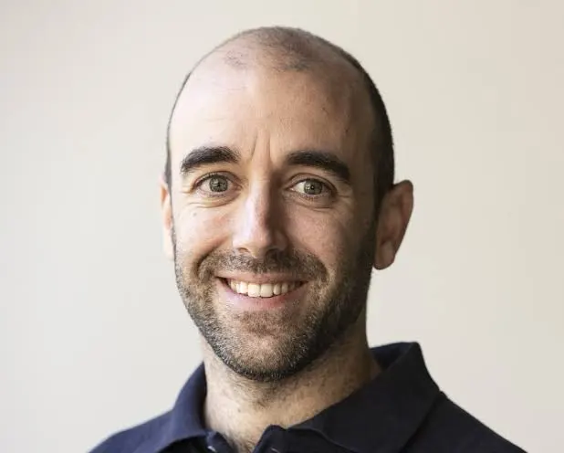
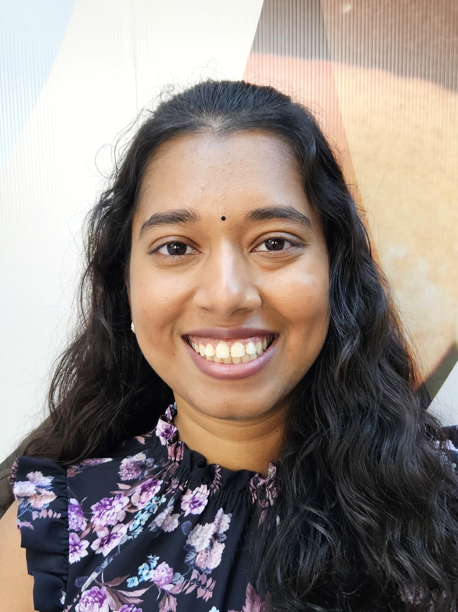
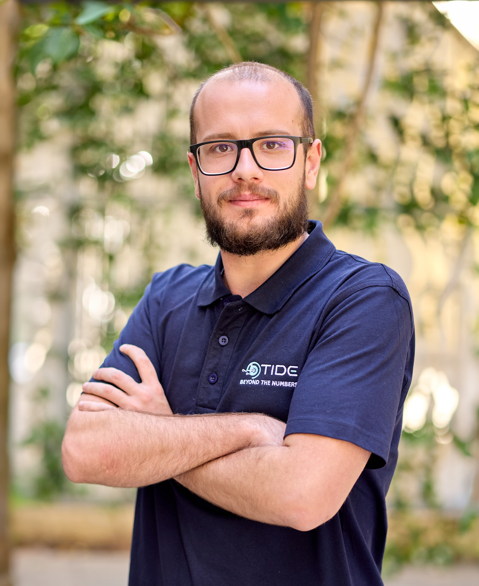

Our People
Meet the researchers at the core of the STREAM research group.

Andrew Zammit-Mangion · Associate Professor, Group Lead (UNSW)
Andrew Zammit-Mangion is an Associate Professor in the School of Mathematics and Statistics at UNSW Sydney. His research interests lie in spatio-temporal modelling and the computational tools that enable it. His work spans variational Bayesian methods for spatio-temporal models, large-scale data fusion, and nonstationary spatial and spatio-temporal modelling. Since 2018, he has focused on deep learning methods in spatio-temporal statistics under an ARC Discovery Early Career Research Award (DECRA). He is currently Chief Investigator on ARC projects on greenhouse gas source-sink estimation, Securing Antarctica’s Environmental Future (SAEF), and the TIDE Industrial Transformation Research Hub, where he also serves as Data Science Coordinator.

Lachlan Astfalck · Lecturer (UNSW)
Lachlan Astfalck is a Lecturer in the School of Mathematics at UNSW Sydney with interests in both methodological and applied research. Methodologically his work focuses on physically constrained spatio-temporal systems, spectral analysis, distributed Bayesian inference, emulation of engineering computer models, and uncertainty quantification in general. His applied research spans all things water: oceanography, hydrodynamics, hydrology and glaciology. He is a current CI on an ARC DP on modelling heat-wave events on the Ningaloo Reef. Previously, he was a Research Fellow in the ARC TIDE ITRH at UWA where he worked on translating modern statistical learning methodology into engineering practice. He has also worked as a Research Fellow at Leeds University where he worked on uncertainty quantification in paleo-climate glaciology.

Aishwarya Bhaskaran · Lecturer (UNSW)
Aishwarya Bhaskaran is a Lecturer in the School of Mathematics and Statistics at UNSW Sydney. Her research primarily focuses on survival analysis and generalized linear mixed models, with particular emphasis on semi-parametric survival regression, penalised methods, likelihood-based inference and asymptotic theory. Her work also spans methodological development and applications across diverse domains, including complex medical datasets such as advanced melanoma. In this context, she collaborates closely with medical researchers to develop statistically rigorous methods with strong predictive performance. She received her PhD from the University of Technology Sydney, where her doctoral work examined likelihood theory and methods for generalized linear mixed models. She subsequently completed a postdoctoral fellowship at Macquarie University, where she further developed high-predictive-performance methodology through semi-parametric Cox and accelerated failure time models.
Yan Gong · Lecturer (UNSW)
Yan Gong is currently a Visiting Assistant Professor of Statistics and Data Science at MBZUAI. Her research interests include developing and applying modern statistical methodologies to address complex, real-world problems in financial risk, extreme weather events, and public health. Her work spans statistics of extremes, spatial statistics, causal inference, Bayesian inference, and deep learning. Prior to joining MBZUAI, she held postdoctoral positions at Harvard T. H. Chan School of Public Health and Imperial College London. She received her Ph.D. in Statistics from KAUST in 2023, under the supervision of Professor Raphaël Huser. She currently serves as a founding organizer of the Spatio-Temporal Statistics and Data Science Community (STSDS), an international network advancing research in spatio-temporal statistics and data science.
Bradley Wakefield · Research Fellow (UOW)
Dr Bradley Wakefield is a Research Fellow in Statistical Data Science at the University of Wollongong, working with the ARC Industrial Transformation Research Hub for Transforming Energy Infrastructure through Digital Engineering (TIDE). He completed a PhD in statistics at the University of Wollongong, where his research focused on statistical disclosure control and multivariate density estimation. He has previously worked as a statistical consultant, collaborating with researchers across a wide range of disciplines on study design, data analysis, and the communication of quantitative results. In his current role, he works with academic and industry partners through TIDE to develop statistical tools that support the development of offshore energy infrastructure. His research interests include Bayesian statistics, spatial modelling, and statistical computing, with applications in geological and environmental statistics.
· UOW Scholar · LinkedIn
Pratik Nag · Research Fellow (UOW)
Pratik Nag is a Research Fellow at the National Institute of Applied Statistical Research Australia (NIASRA), University of Wollongong, where he works with Prof. Noel Cressie, Prof. Andrew Zammit Mangion, and Prof. Sumeetpal Singh. His research focuses on dynamic spatio-temporal modeling for noisy and incomplete data, with particular emphasis on Fourier Neural Operators and the development of fully Bayesian frameworks for high-dimensional models. He completed his PhD at King Abdullah University of Science and Technology (KAUST) under the supervision of Prof. Ying Sun. His broader research interests lie in the development of advanced statistical and machine learning methodologies, especially for predictive modeling and uncertainty quantification. He is particularly interested in coupling neural networks with traditional statistical paradigms to develop efficient, data-driven solutions to real-world problems, and is deeply motivated to explore innovative approaches to addressing complex challenges in modern data science.

Daniel Fynn · PhD Candidate (UOW)
Daniel Fynn is a PhD candidate in Applied Statistics at the University of Wollongong. His research focuses on inference for high-dimensional time-series dependence models, with particular emphasis on copula-based methods.
He is currently finalising a paper on fast amortised inference for time-series copula models using neural networks. In parallel, he is developing a real-time prediction framework for wave conditions under the TIDE project, based on stationary Markov vine copula models.

Vinicius Ricardo Riffel · PhD Student (UOW)
Vinicius Ricardo Riffel is a PhD student at the University of Wollongong, supervised by Andrew Zammit-Mangion and David Gunawan. His research focuses on the development of amortised methods for Bayesian inference, with a particular interest in leveraging simulation-based techniques for complex statistical modelling.